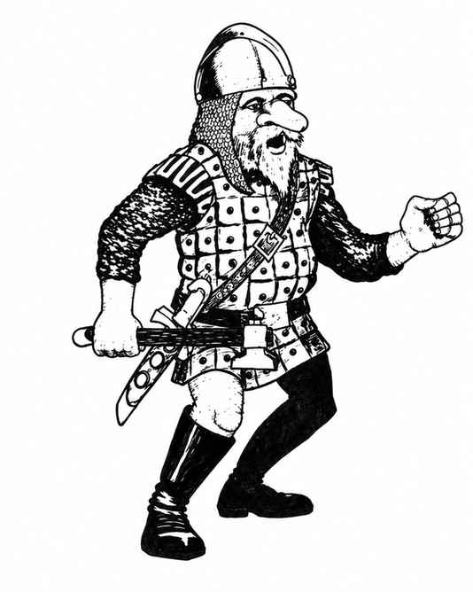

侏儒 · Gnome
 |
|
侏儒与体型较大的近亲矮人相似，以氏族为社会组织。各氏族并不排外，也不敌视彼此，但会相互竞争、力争胜过其他族群。每遇到 40 名侏儒，就有一名 2、3 或 4 级战士（掷六面骰：1–2 为 2 级、3–4 为 3 级、5–6 为 4 级）。若一群中有 160 名或更多侏儒，还会有一名 5 级战士与一名 3 级战士担任首领和副手；人数达到 200 时，另有一名 4–6 级侏儒牧师。人数达到 320 时，还会额外出现一名 6 级战士、两名 5 级战士、一名 7 级牧师与四名 3 级牧师。
若在巢穴中遭遇，还会额外出现 2–8 名 2 或 3 级战士、1–4 名 2 级牧师；成年雄性的 50% 为雌性，25% 为幼崽。侏儒巢穴有时建在土穴中，但 75% 位于岩石丘陵。
侏儒通常穿镶金属圈或钉有金属饰片的皮甲并持盾（护甲等级 5）。武器配置如下：
| 武器组合 | 概率 |
|---|---|
| 短剑与短弓 | 10% |
| 短剑与矛 | 20% |
| 棍棒与投石索 | 15% |
| 棍棒与矛 | 40% |
| 棍棒与短剑 | 15% |
高于普通等级的侏儒都穿链甲并持盾；高于 5 级的穿板甲并持盾。高等级战士每级有 10% 概率拥有魔法护甲和／或武器。侏儒牧师每级也有 10% 概率额外拥有 1–3 件牧师可用物品（药水、牧师卷轴、戒指、魔杖／法杖／权杖或杂项魔法物品）。
侏儒有 80% 概率驯养动物守卫巢穴：5–30 只獾（70%）、3–12 只巨獾（20%），或 2–8 只狼獾（10%）。
侏儒憎恨狗头人与地精，对这两类敌人的命中骰获得 +1 加值。由于体型矮小，且擅长对付大型生物，侏儒与豺狼人、熊地精、食人魔、巨魔或巨人近战时，对方的生命骰均承受 −4 惩罚。
所有侏儒都高度抵抗魔法与毒素，豁免检定时视为高于实际等级 4 级。侏儒能以红外视觉看见 60 尺内的怪物。凭借采矿技能，它们有 50%–80% 概率察觉向上或向下倾斜的通道、不安全的墙壁、地板与天花板，以及大致深度和方向。传说中存在能施展魔法、最高达到 4 级的侏儒，但尚无证据。
除阵营语与种族语外，侏儒还会说狗头人语、地精语、半身人语、矮人语，并能与穴居哺乳动物交谈。
外观。 多数侏儒肤色为木棕色，少数偏灰褐色；头发从中灰到纯白，眼睛从灰蓝到亮蓝。他们穿皮革与土色衣物，也喜欢珠宝。侏儒平均寿命约 600 年。